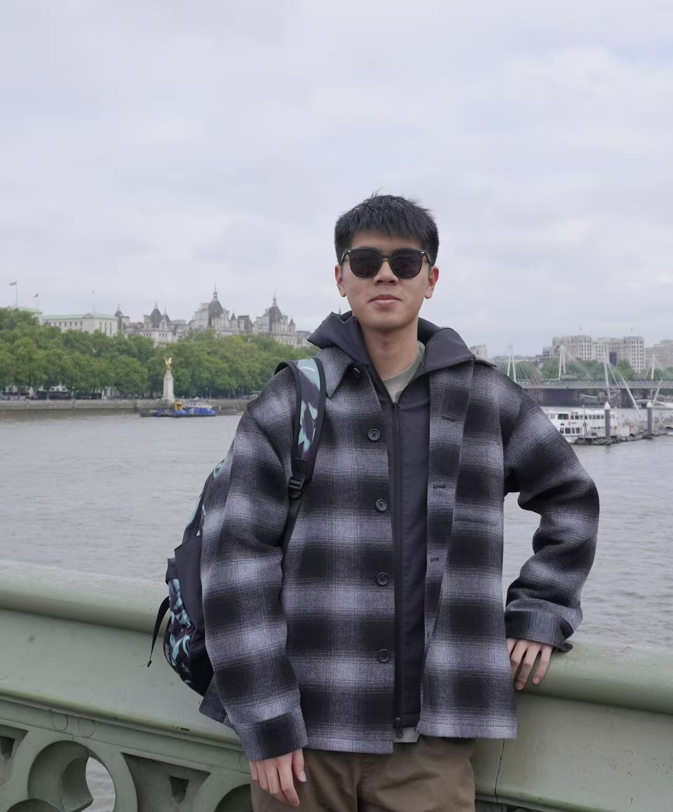
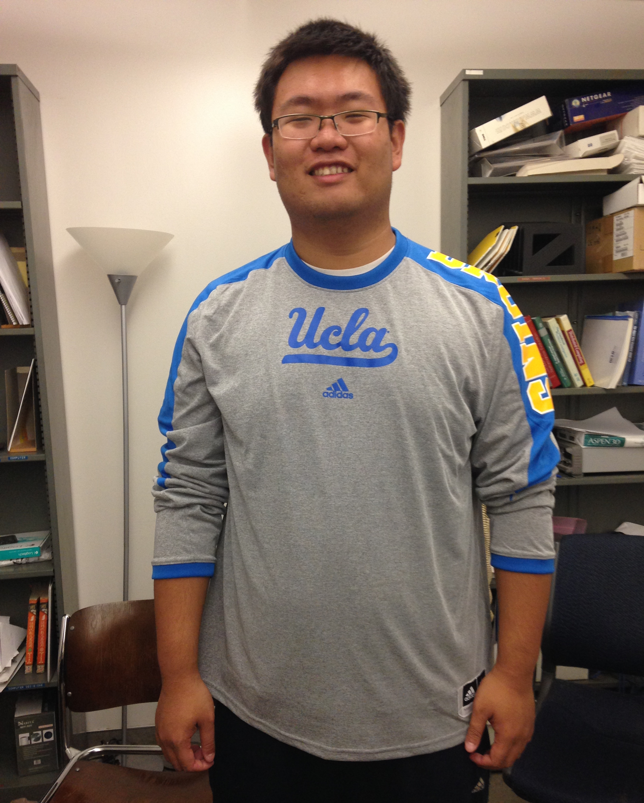
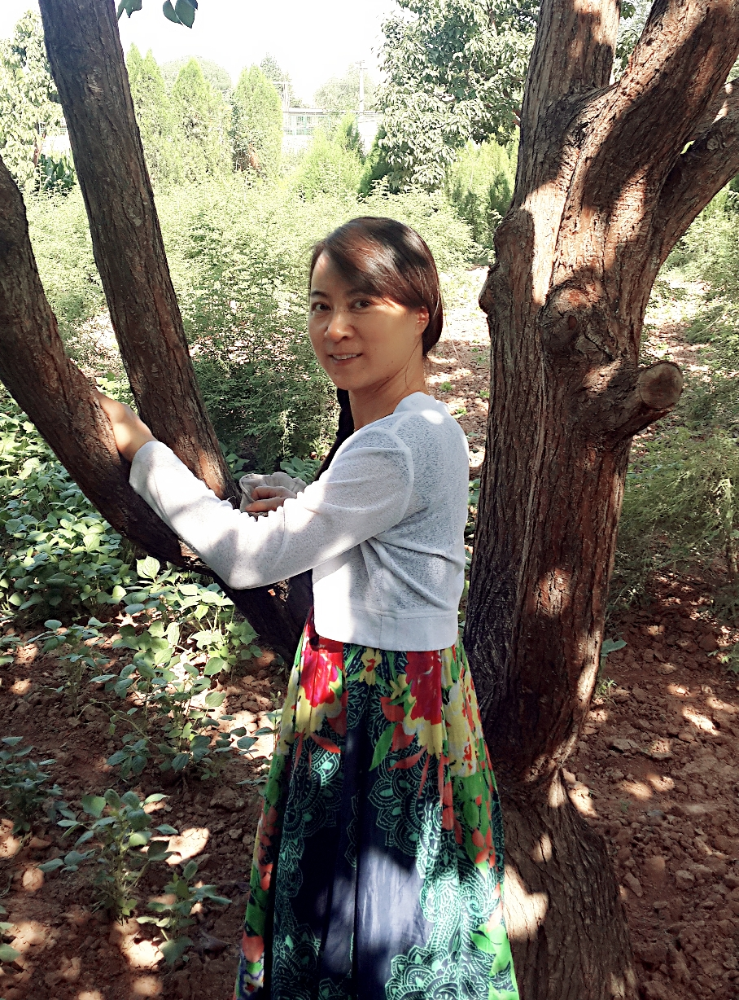
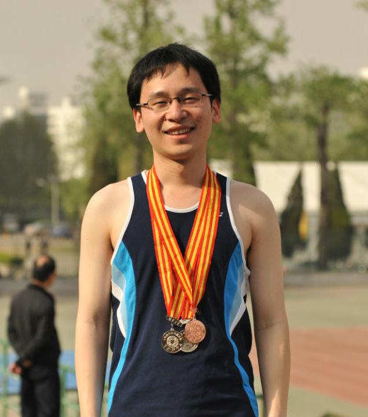
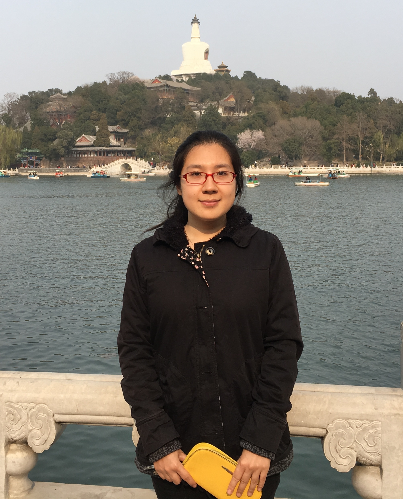
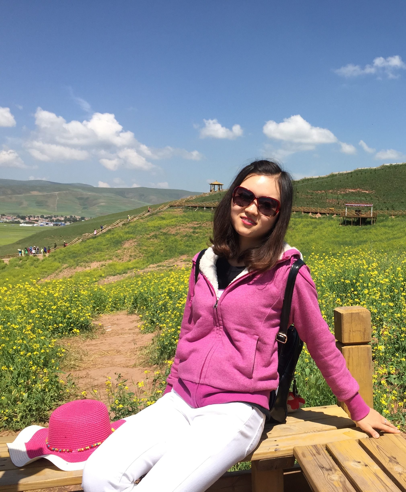
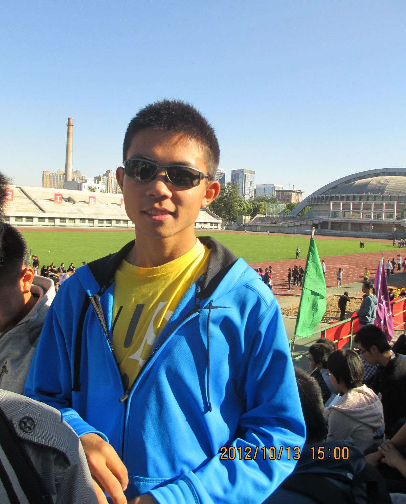
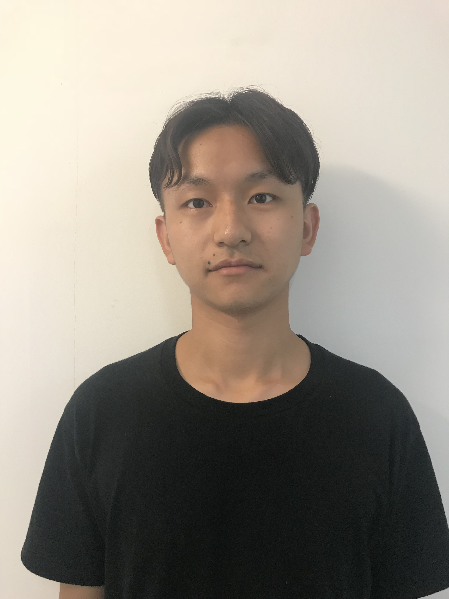
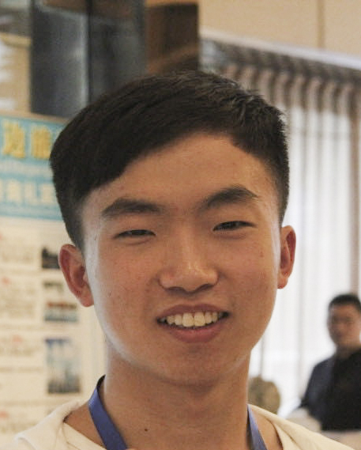
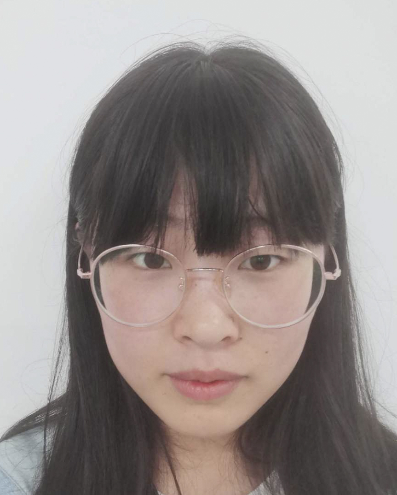

Faculty
Fengyuan Ren (任丰原)Professor & Director |
Graduate Students
Yifan Liu (刘一凡)Ph.D. Student |
 |
Zhongjie Chen (陈中杰)Ph.D. Student |
|

|
Chaolei Hu (胡超磊)Ph.D. Student |
Yang Zhang (张扬)Ph.D. Student |
|

|
Xizhi Zhang (张熙至)Ph.D. Student |
Dongkang Hu (胡栋康)Ph.D. Student |
Alumni
Tao He (何滔)M.S. (2008) |
Jia Zhou (周嘉)M.S. (2010) |
||
Li Tang (汤立)M.S. (2012) |
Yinsheng Xu (许寅生)Ph.D. (2013) |
||
Yu Hu (扈煜)M.S. (2013) |
Jiao Zhang (张娇)Ph.D. (2014)Associate Professor, Beijing University of Posts and Telecommunications |
||
Wanchun Jiang (蒋万春)Ph.D. (2014)Associate Professor, Central South University |
Yumeng Zhang (张雨萌)M.S. (2014) |
||
Shan Gao (高山)M.S. (2014) |
Yuan Zhong (钟远)Postdoc (2015) |
||
|  |
Peng Cheng (程鹏)Ph.D. (2015)First Job in MSRA. |
Shibo Xu (许士博)Ph.D. (2015) |
|
Meng Hou (侯蒙)Ph.D. (2015) |
Wen Chen (陈雯)M.S. (2015)First job in Alibaba. |
||
Yong Piao (朴勇)M.S. (2015)First job in KEDACOM. |
Jinli Meng (蒙金莉)Ph.D. (2016) |
||
Mao Miao (缪懋)Ph.D. (2017)First job in Alibaba. |
Boyang Xu (许博阳)M.S. (2018)First job in Microsoft |
||
|  |
Xiaolan Liu (刘晓兰)Ph.D. (2018)Engineer |

|
Danfeng Shan (单丹枫)Ph.D. (2018)Assistant Professor, Department of Computer Science and Technology, Xi'an Jiaotong University, Shaanxi, China |
|  |
Ran Shu (舒然)Ph.D. (2018)Associate Researcher, Microsoft Research Asia |
 |
Tong Zhang (张彤)Ph.D. (2019)Associate Professor, Nanjing University of Aeronautics and Astronautics |
|  |
Bo Wang (王博)Ph.D. (2019)Postdoctor in Tsinghua |
 |
Dong Liu (刘栋)M.S. (2019) |
Jing Xie (谢靖)Ph.D. (2019)Engineerer, EVERSEC, Beijing |
Wenxue Cheng (程文雪)Ph.D. (2019)Researcher, Microsoft Research Asia |
||
Kun Qian (钱坤)Ph.D. (2020)First job in Alibaba |

|
Xuesong Li (李雪松)Ph.D. (2020) |
|
Abdul Basit DogarPh.D. Student (2015 - ) |
Qingkai Meng (孟晴开)Ph.D. Student (2016 - ) |
||
Kefan Chen (陈科帆)Ph.D. Student (2016 - ) |
Yiran Zhang (张乙然)Ph.D. Student (2017 - ) |
||
|  |
Nianshi Li (李念实)M.S. Student (2018 - ) |
Xiangwei Meng (孟祥炜)M.S. Student (2020 - ) |
|
Haoyu Yang (杨皓宇)Ph.D. Student (2019 - ) |
Yingchen Fan (范英晨)M.S. Student (2019 - ) |
||
Hao Yang (杨浩)M.S. Student (2018 - ) |
Wei Li (李玮)M.S. Student (2019 - ) |
||
Siyuan Qu (渠思源)M.S. Student (2020 - ) |
 |
Zhaoyang Wei (魏朝阳)M.S. Student (2020 - ) |
|
Rong Zheng (郑蓉)Ph.D. Student (2020 - ) |
Yanying Ma (马延滢)M.S. Student (2020 - ) |
||
Xiaohui Luo (骆晓徽)Ph.D. (2019) |
Zhuo Jiang (江卓)Ph.D. |
||
|  |
Yan Wang (王艳)M.S. Student (2020 - ) |

|
Xiaoyu Li (李啸宇)Ph.D. Student (2025) |